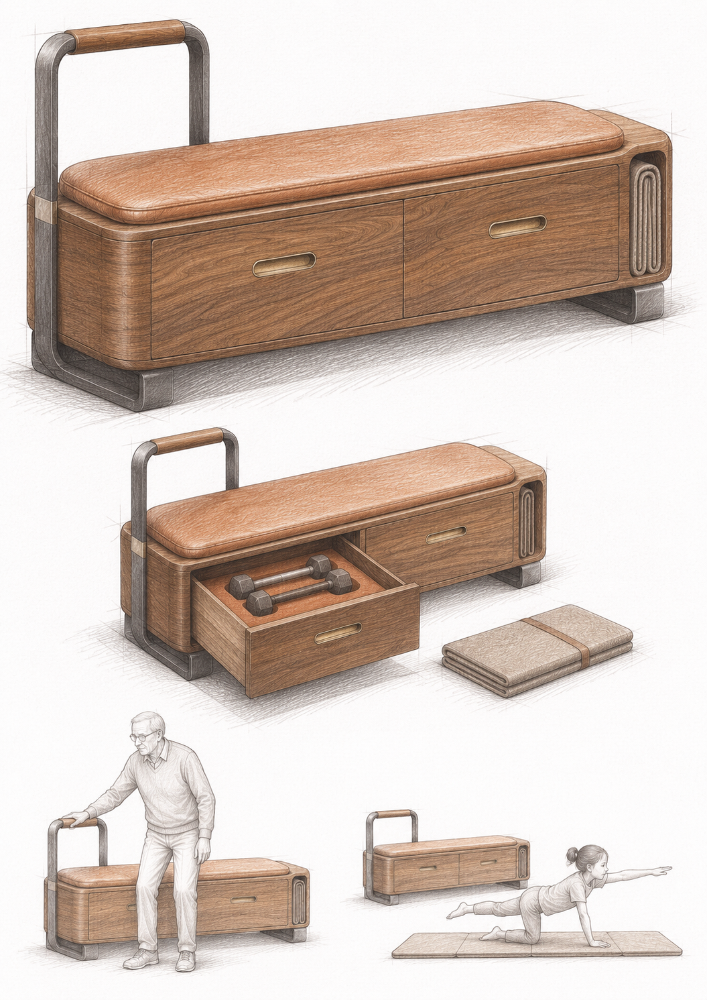
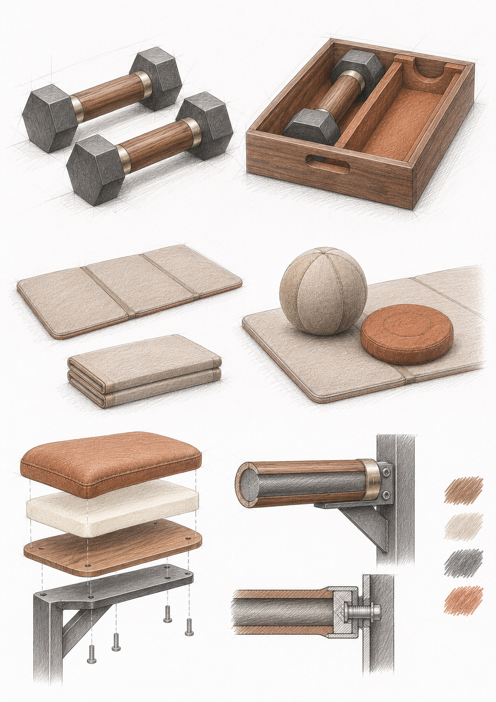

Pencil_sketches_COLOR_A4_2026-11-25Скамья с хранением
Графит и цветные карандаши: орех, камень, графит, тёплый акцент

Идея: Постоянное сиденье, отдельный боковой хват, два отсека и место панели. На малых видах - доступ к весам и использование напольной панели.
Проверки: Проверить: хват под нагрузкой, подход к сиденью, выдвинутый тяжёлый ящик и защита весов от ребёнка. Гнёзда делать под измеренный инвентарь.
Эскизная визуализация ИИ, без масштаба. Конструкция ещё проверяется.
Напольный шкаф со складным сиденьем
Графит и цветные карандаши: орех, камень, графит, тёплый акцент

Идея: Два состояния, две передние ножки и боковые неподвижные опоры. Перед коленями нет поперечной рукояти; стена не несёт рабочую нагрузку.
Проверки: Проверить: разворот и проход между опорами, фиксацию ножек и шарнира, высоту хранения и устойчивость пустого шкафа. Открытая полка весов пока не решает ограничение доступа.
Эскизная визуализация ИИ, без масштаба. Конструкция ещё проверяется.
Инвентарь и детали контакта
Графит и цветные карандаши: орех, камень, графит, тёплый акцент

Идея: Сверху - гантели и их гнёзда. В середине - гибкая панель, мягкий предмет и цель. Снизу - сменное сиденье и хват со стальным сердечником.
Проверки: Проверить: крепление деревянной оболочки, просвет пальцев, очистку, швы панели и замену чехла. Гантели показаны как формообразование; изготовление грузов не назначено.
Эскизная визуализация ИИ, без масштаба. Конструкция ещё проверяется.